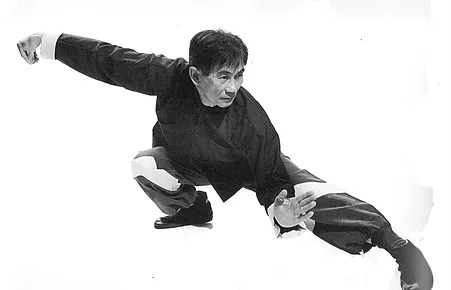

Benefícios da Prática do Tai Chi Chuan
Tai chi chuan alivia sintomas da fibromialgia, estudo publicidade da Associated Press (veiculado pela folha online, dia 20/08/2010)
A prática do tai chi chuan alivia dores nas articulações e outros sintomas da fibromialgia, segundo um pequeno estudo sobre o antigo exercício chinês. Os resultados foram publicados no New England Journal of Medicine, na quinta-feira (19). A atividade combina meditação com movimentos lentos, suaves, respiração profunda e relaxamento.
Pode melhorar a força muscular, o equilíbrio, o sono, a coordenação e, de acordo com evidências, a fibromialgia. Os sintomas da doença incluem dor no corpo, fadiga e pontos sensíveis nas articulações, músculos, e outros tecidos leves. O problema é mais comum em mulheres de meia idade, e sua causa ainda é desconhecida. Por causa da falta de sinais evidentes e testes definitivos, alguns médicos questionam se o problema é físico ou psicológico.
O estudo liderado por Wang Chenchen, da Tufts University School of Medicine, em Boston, envolveu 66 pacientes com fibromialgia, que experimentaram o tai chi chuan ou exercícios de bem estar e alongamento duas vezes por semana, durante 12 semanas.
Os sintomas melhoraram de forma significativa para o grupo de tai chi chuan e pouco para os outros. Os pesquisadores notaram melhorias na dor, humor, qualidade de vida, sono, e capacidade de exercício, que se mantiveram por 24 semanas após o início do estudo.
Em um editorial, dois médicos e um especialista em medicina oriental do Beth Israel Deaconess Medical Center, em Boston, classificaram os resultados como "provocativos" e "impressionantes", mas disseram que ainda não está claro se o benefício se deve a um efeito placebo. De acordo com os médicos, os resultados precisam ser repetidos em um estudo maior.
O principal patrocinador do estudo foi o Centro Nacional para Medicina Complementar e Alternativa, do governo dos EUA. Diversos autores recebem verbas federais para investigações sobre corpo e mente, e tem vínculo financeiro com empresas que produzem medicamentos para tratar a fibromialgia.